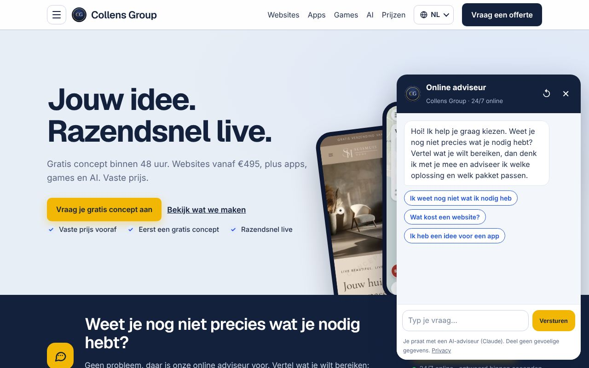
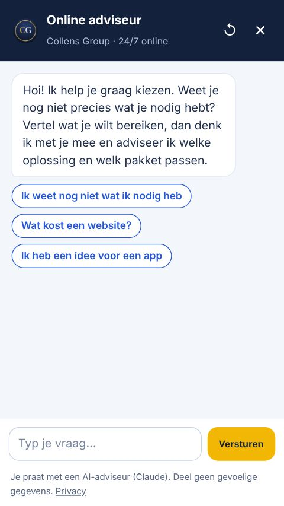

AI-chatbot laten maken
Een chatbot op je website die vragen van klanten direct beantwoordt, op basis van jouw eigen teksten en prijzen. Vanaf €995, klaar in 1 week.


Wat doet de chatbot?
- Beantwoordt veelgestelde vragen, dag en nacht
- Gebruikt alleen jouw eigen informatie: website, prijzen, voorwaarden
- Stuurt een vraag door naar jou als hij het antwoord niet zeker weet
- Kan aanvragen of afspraakverzoeken verzamelen en naar je mail sturen
Wat kost een AI-chatbot?
Een AI-chatbot op je eigen kennis begint bij ons bij €995 eenmalig. Daarnaast betaal je het gebruik van het AI-model; bij de meeste kleine bedrijven is dat een paar euro tot enkele tientjes per maand. Dat staat vooraf in de offerte. Beheer is optioneel vanaf €49 per maand.
Ter vergelijking: een AI-agent met no-code tools kost in Nederland eenmalig €2.000 tot €8.000 (Searchlab, 2026).
Bron marktprijzen: Searchlab, Wat kost een AI-agent laten bouwen (2026). Onze prijzen zijn eindprijzen: er komt geen btw bij.
Voor wie is het handig?
Voor bedrijven die steeds dezelfde vragen krijgen: openingstijden, prijzen, beschikbaarheid, levertijden, voorwaarden. De chatbot neemt dat werk over, zodat jij tijd overhoudt voor klanten die echt willen kopen.
Privacy en controle
We richten alleen in wat nodig is, met officiële koppelingen en zonder wachtwoorden te delen. Jij bepaalt welke informatie de chatbot gebruikt en kunt die altijd aanpassen.
Veelgestelde vragen
Werkt de chatbot ook in het Engels?
Ja. De chatbot antwoordt in de taal waarin de bezoeker de vraag stelt, dus ook in het Engels, Duits, Frans of Spaans. Hij gebruikt daarbij dezelfde informatie als in het Nederlands: jouw eigen teksten, prijzen en voorwaarden. Dat is handig als je toeristen, expats of klanten in het buitenland hebt, want zij krijgen direct een antwoord zonder dat jij alles hoeft te vertalen.
Kan de chatbot fouten maken?
Dat is het grootste risico van AI, en daar houden we bij het bouwen rekening mee. De chatbot gebruikt alleen jouw eigen informatie, zoals je website, prijslijst en voorwaarden, en verzint geen antwoorden over dingen die daar niet in staan. Weet hij iets niet zeker, dan zegt hij dat en stuurt hij de vraag door naar jou. Voor de livegang testen we hem met de vragen die jouw klanten echt stellen.
Hoe snel staat de chatbot op mijn site?
Meestal binnen 1 week na de intake. In die week verzamelen we je informatie, richten we de chatbot in en testen we hem met echte vragen van jouw klanten. Daarna plaatsen we hem op je site met een klein stukje code, dat werkt op de meeste websitebouwers en maatwerksites. Jij ziet en test de chatbot voordat bezoekers hem te zien krijgen.
Zie ook: AI en automatisering · Website laten maken